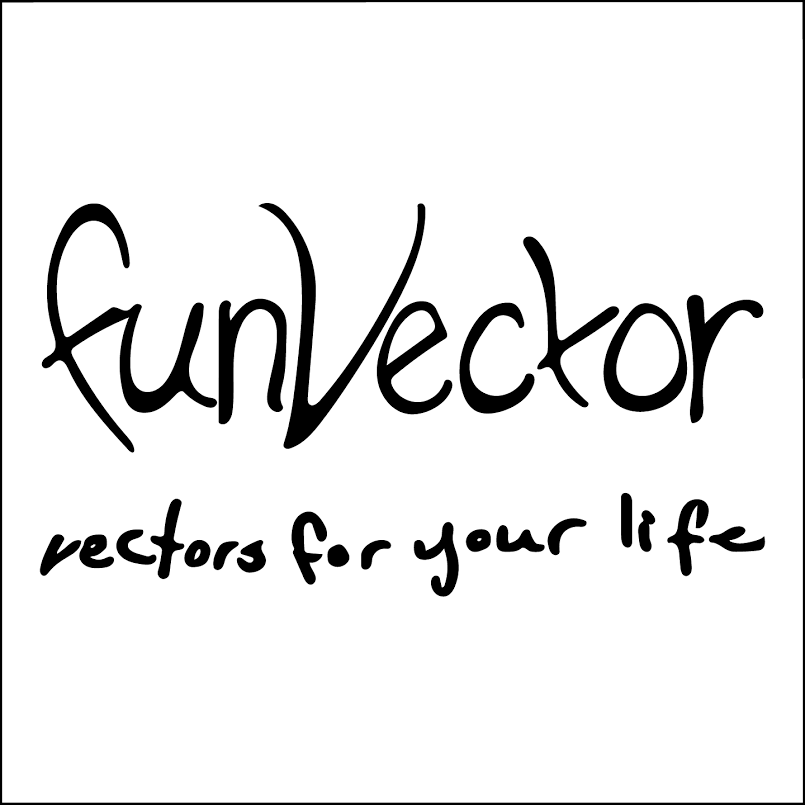

funVector

funVector is a regularly updated library focused on simple vector images drawn from everyday life.
https://github.com/baker-natalie/fun-vector
funVector is a regularly updated library focused on simple vector images drawn from everyday life.
https://github.com/baker-natalie/fun-vector
Jack in the Box is a video blog about Minecraft and other videogames hosted by seven-year-old Jack.
https://github.com/baker-natalie/jack-in-the-box